Monzo customers loved seeing their mortgage in the app, but it didn’t make money


connected mortgages by October 2026,
from almost any UK lender
See your balance and equity, model overpayments, see how a new rate changes your payment
An engagement product, with no revenue
To make money, we launched remortgaging with Better.co.uk. It worked, but not enough


~5,000 customers
The goal was ~300 applications a month by September 2024. We reached 70, and growth stalled
Our success ended at the referral. Once people left Monzo, we only saw what Better reported, and couldn’t change it.
The first click-out journey I designed, 2024
In 2025 and 2026, I led design for remortgaging through a strategy reset and an acquisition
Vision and growth
- Led the vision: one remortgage journey inside Monzo
- Designed how to implement it, and the first implementation
- Designed all the growth experiments, including the new entry points
Habito integration
- Integrated Habito, adapting the journey to their operations
- Recommendations in the app
- The application form in the app
- Adviser chat in the app (had to be paused)
- Improved the progress tracker
- Next: growing with first-time buyers
One squad
- 1 product manager
- 6 engineers
- 1 data scientist
- User researcher (left after the vision)
- Operations and Compliance
- Me, on design


2025 · The vision

2026 · Recommendations in the app
We lent our engineers for two months, and used the time to listen
Financial Health needed engineers
And our experiments weren’t moving the numbers
A discovery sprint
Customer research, a vision, and a feasibility check. Research with customers who remortgaged, and customers who dropped out.

The research, told as comic strips: two customers we interviewed · Monzo blog
Customers wanted one journey, but not the same one
“Don’t send me out.”
They expected to get the new deal inside Monzo, not on another website.
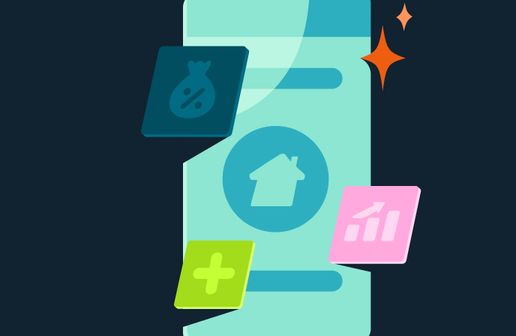
“Use what you know.”
Reuse the data Monzo already holds, instead of asking again.

“Let me choose.”
Some wanted a call for reassurance; others wanted to self-serve, with a human on hand.

“Tell me what’s happening.”
The wait was the most stressful part.

George
Got his new deal, but was frustrated at being sent to a partner’s website to do it.
Carla
Gave up when she hit the friction of doing it all outside the app.
Two personas from the 1:1 research interviews, 2025 · customers who remortgaged with us, and customers who dropped out
I turned the vision into bets the team could ship

What we could start straight away
- A progress tracker closer to real time
- Pre-fill with data we already hold
- Indicative rates
- Surveys in the app
What needed more work
- Our own application form
- Estimated deals
- Recommendations in Monzo, view only

The big things
- Recommendations in Monzo, you can accept them
- Adviser chat in the app*
- Document upload*
* Moved back again later in 2026: we needed to grow faster, so the focus moved to first-time buyers.
Reach people before they’re ready to remortgage
Only customers with a connected mortgage and a known deal end could enter. More than 2m customers had a mortgage we couldn’t see.
- Not connected: indicative rates for your area, and “add your deal end”
- Connected: estimated deals from real lenders
- Audit and design of the entry points to Homeownership across the Monzo app
~75% above the referral goal
7,500 referrals, the goal was 4,300
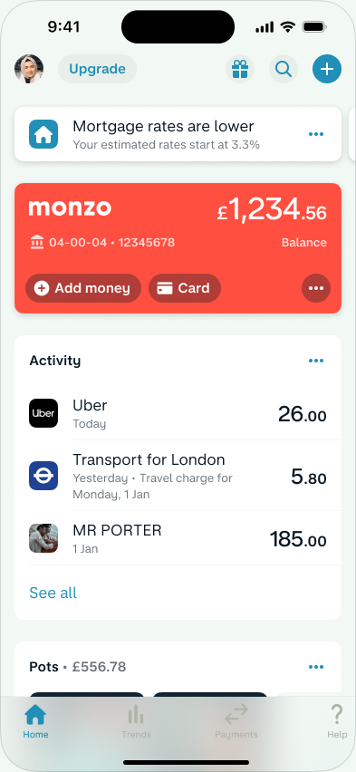
Rate updates · on your home screen

Indicative rates · no connection needed
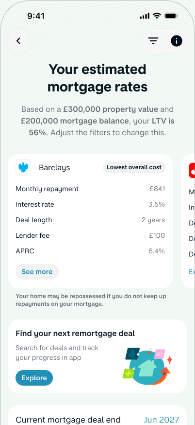
Estimated deals · connected customers
First, I became the customer
Before the workshop, I went through Habito’s journey myself, as a real applicant, and captured every screen.
- Applied as a customer, from the first tap in Monzo to the mortgage illustration
- Kept every screen, email and document in one Figma page
- I gave the team one shared picture of the journey as it really was
- A second account and a second brand, halfway through
- A long form before any value
- The recommendation and the messages lived on Habito’s website and in Habito-branded emails, not in Monzo
I convinced the team to call it Habito by Monzo across the journey, the documents and the emails, so customers know it’s one journey, linked to Monzo.
A full rebrand is a much bigger conversation, and it’s still ongoing.
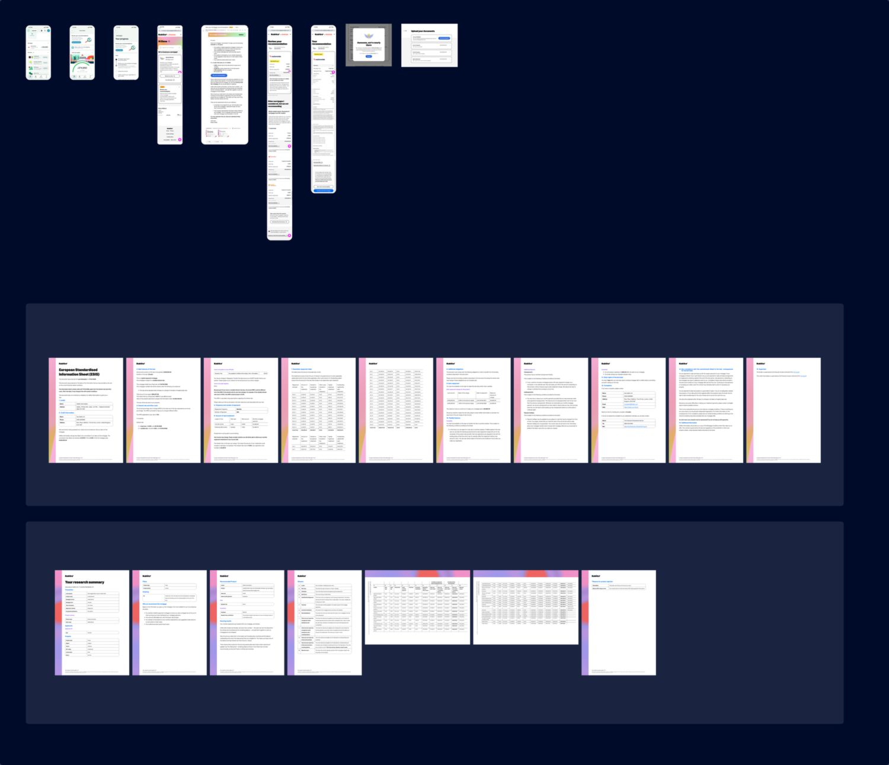

The quick win: tell people the moment it’s ready
People were ready, but the only reminder was an email from Habito. The moment a recommendation arrives is when they care most.
- Before: only an email from Habito
- Test: a push from Monzo on day 0, and again on day 3
- Result: accepted recommendations went up (I don’t have the exact figure)
Option B. The tracker already existed, so we could test momentum quickly.

- 2 taps to the recommendation
- A whole screen to build trust
- A new screen to build
- 3 taps to the recommendation
- A screen people already know
- Nothing new to build
Four rounds before the version you’re about to see
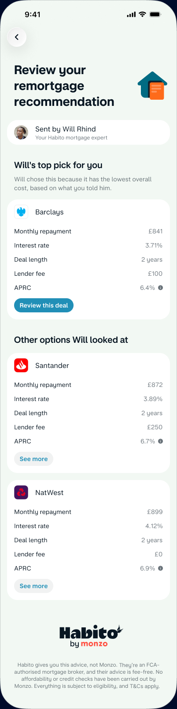
A top pick, with alternatives
Framed through the adviser: “Will’s top pick for you”. What it missed: no way to reach the adviser, no honest sense of urgency.

Total cost first
Not the monthly rate. And stay or switch, in pounds: staying with your lender is simpler, switching can be cheaper.

A hub with tools
Stress-test the deal, hear the adviser explain it. After the crit: more progressive disclosure.

One recommendation, reasons first
The deal, why, the real cost, what was ruled out. Everything else one tap away.
Decision support, not decision pressure

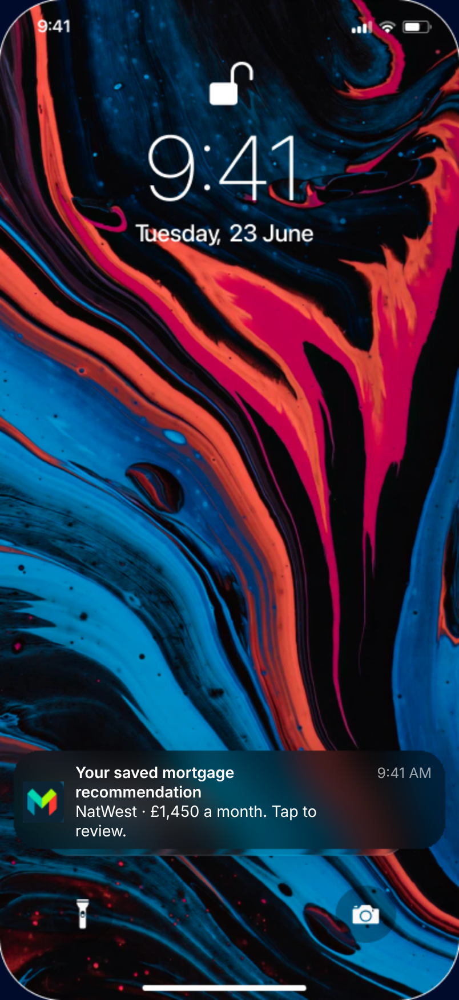
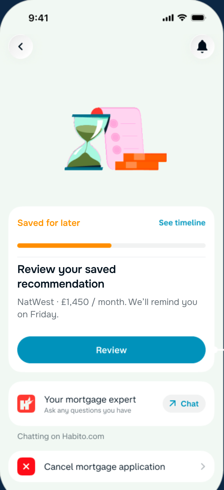
Decision: a third button, “I need more time”. You choose when to be reminded, and the saved recommendation waits in your tracker.
Why: today you can stop your application at any time, but you start again from zero. And a yes-or-no screen loses everyone who isn’t ready.


Decision: the adviser speaks first: “I’m already looking at alternatives”, with other deals on the same screen.
Why: lenders pull rates all the time. That shouldn’t be a dead end.
Both paths were designed, but never built.
Always clear whose turn it is
- One card, ten stages. It changes with the journey, so there is always one next step.
- Orange or green. Orange when you need to act. Green when Habito or the lender is on it.
- The home for everything else. The push lands here. The adviser chat was designed to live here.
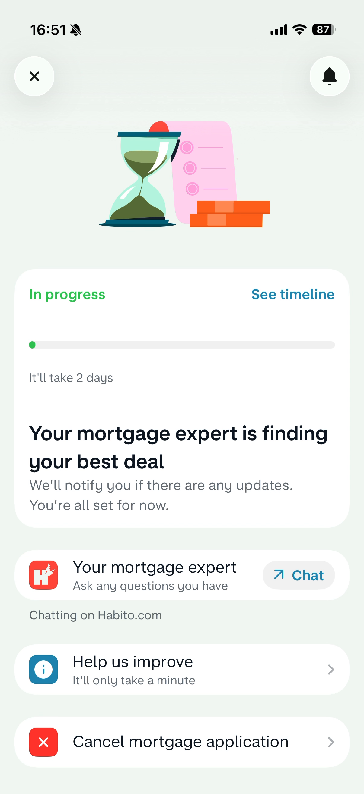
Two screens from the live app, November 2026
On the right: my Figma MVP, rebuilt in code
Open the Figma file ↗The adviser in the app: designed with guardrails, then paused
Wait for Monzo’s own chat
Habito’s chat inside Monzo
A second chat in Monzo: people ask their adviser about a blocked card, or Monzo support about their mortgage.
Kill switch agreed up front: investigate at 2% misrouted chats, roll back at 5%. Pilot at 10%, then a 50/50 test.
The outcome: paused for this year. Resources went to first-time buyers and other priorities. For now, the chat stays in Habito.
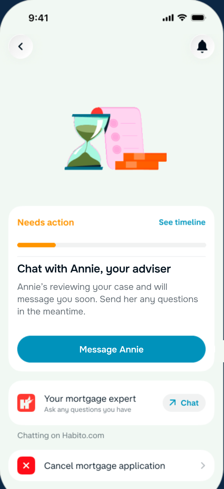
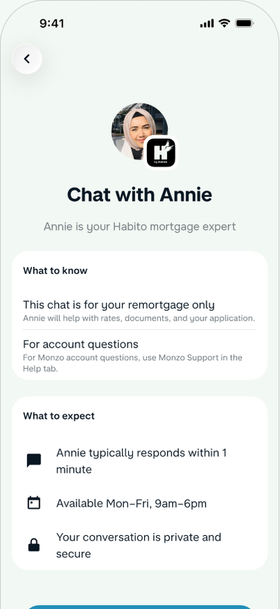

Move the application into Monzo, pre-filled
The application form lived on the broker’s website, and it had around 200 questions. With Better, in 2025, almost half of people dropped out there (Better’s own figure).
- The application inside Monzo, not on a partner site
- Pre-filled: you confirm what Monzo already knows
- Save it and come back later
- Measured step by step, to see where people stop
The first version went live at the end of September 2026. Early signal from the team: about 40% more people finish the form and reach a recommendation than when it meant going to Habito’s website. Still early, so not a mature result yet.

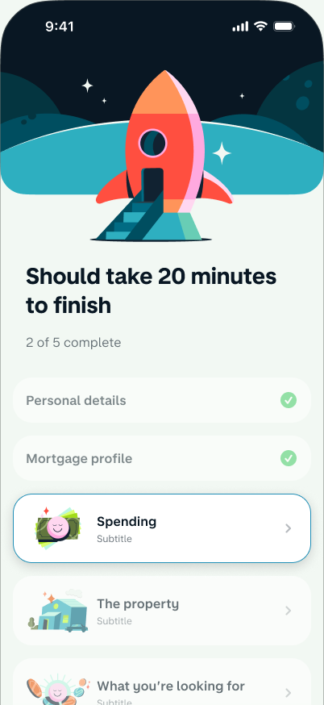
Before scaling, I audited the whole product
Reviewed ten areas of the live product, end to end, and scored the main journeys on the same six criteria.
Not one broken journey. A product that had grown piece by piece: 11 ways of saying “connect your mortgage”.
Three initiatives for the next half, and one longer-term direction: organise the product around your property, not one mortgage.

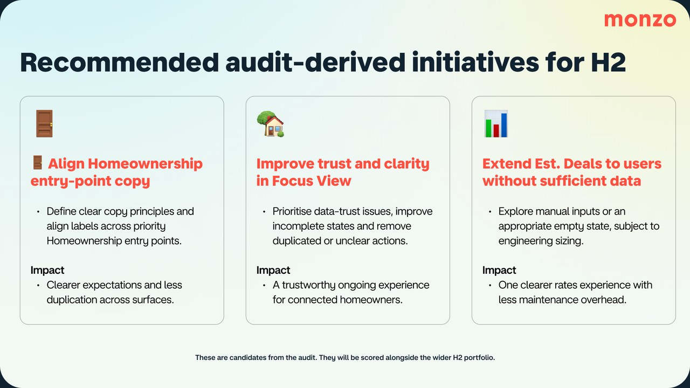
Two slides from my audit deckWhat I’d take to the next problem
More referrals aren’t more mortgages
Design the middle of the funnel as carefully as the entry point

The integration is part of the design
Routing, consent and who you’re talking to are design decisions

Speed needs a kill switch
Agree the guardrails and the rollback before you ship

Name the problem first
“Compare” vs. “broker”: one word changed what people expected

Why this matters for Benefits
Partners whose systems you don’t own
Monzo + Habito + lenders → Deel + providers
Status and support people can trust
Who am I talking to, and what happens next?

Rules that change by market
Regulated wording, checked early

Decisions that matter a lot
To the people making them

Where would you like to go deeper?

Four decisions I’d defend
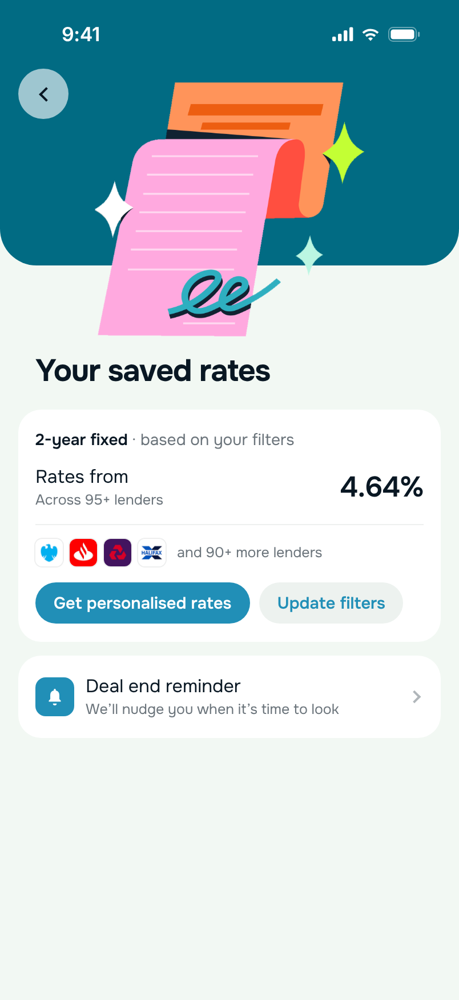
Value without connecting
If you only looked at rates, your saved rates come first. The earlier visit counts.

Make the cost concrete
£926 a month now, £1,358 if you do nothing. Urgency you can check.

The tracker lives at home
Progress is the hero of the home screen, not a separate place.
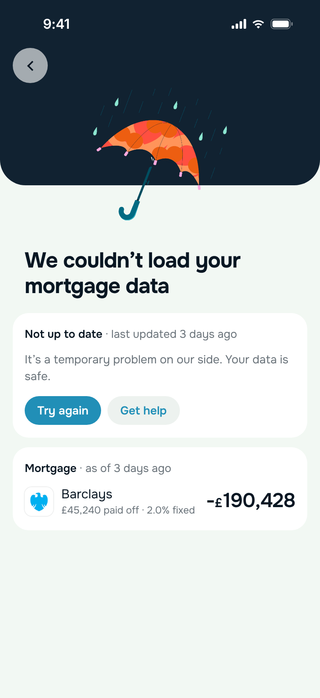
Never a dead end
If the data fails, show the last known numbers, with a date.
Resolved every time the screen opens: connected? → remortgaging? → months until the deal ends.
Two mortgages, one home: four ways to show it


The tools were built for one person with one mortgage. Two mortgages, or a couple, saw confusing or different numbers.
Show the property first, then its mortgages.
The data already adds up at property level. The screen didn’t.
The cheapest fix: both mortgages are already there, they just render badly.
Where it goes next: your mortgage data, straight from your lender

Through Open Banking, with consent you control: you choose the accounts and renew every 90 days.
“You’ll reach the next loan-to-value band before your deal ends.” “Overpaying beats your savings pot.”
“Switching now would cost £2,900 in early repayment charges.” Shared with the FCA as part of Monzo’s Open Finance work.